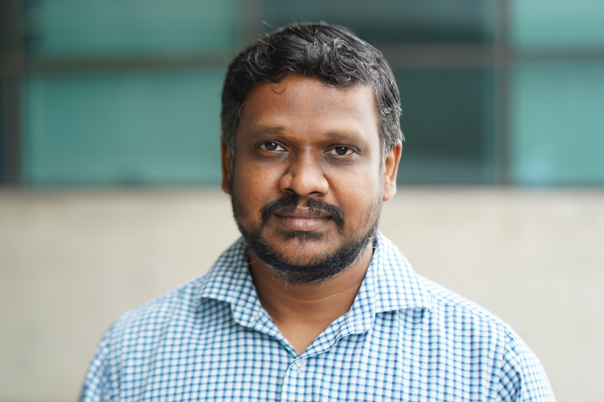

Research Areas
Research Labs
Publications
Facilities
Physics
Central Facilities
Research Areas
Astrophysics and Cosmology
Theoretical Condensed Matter Physics
Experimental Condensed Matter Physics
High Energy Physics
Optics, Spectroscopy and Laser Plasma Physics
Quantum infromation and Technology
Research Labs
| Sr. No. |
Name of the Equipment |
Name of FIC |
Key Features / Capabilities |
Location |
Equipment Category |
| 01 |
MULTIMODAL SCANNING PROBE MICROSCOPE
|
Jyoti Ranjan Mohanty |
AFM, MFM, PFM, conducting AFM, variable field and
temperature imaging
|
C-101 |
Microscopy |
| 02 |
ULTRA-HIGH SENSITIVE MOKE MAGNETOMETER
|
Jyoti Ranjan Mohanty |
High sensitive MH loop and domain imaging
|
C-103/B |
Magnetic Characterisation
|
| 03 |
14-INCH TELESCOPE |
Mayukh Pahari |
large area; capable of observing faint objects
|
C-707 |
Telescope |
| 04 |
PHOTOLUMINESCENCE SPECTROMETER
|
Sai Santosh Kumar Raavi |
Steady state PL
|
A-716 |
Spectroscopy |
| 05 |
XRD
|
Saket Asthana |
Powder XRD, Structural phase analysis
|
C-108 |
Crystallography |
Facilities in Physics Department
Central Facilities
Astrophysics and Cosmology
The group has strength at developing optical instrumentation and
photonics along with theoretical and computational modeling. The
research involves interaction of light with atoms, molecules, clusters,
nanosystems and plasmas. We have an ultrashort intense laser system in
the lab which will be deployed to study dynamics occurring in various
systems ranging from the atmospheric to astrophysical environments.
Theory and experiment live in harmony and generate harmonics in the lab
for spectroscopic studies. The group has successfully demonstrated that
fundamental science can be translated to real-world technology which has
applications in advanced imaging of systems starting from atomic to
macroscopic sizes and optics based non-invasive medical devices,
developing high efficiency photovoltaics, particle accelerators to treat
deadly diseases, and astrophysical plasma modeling.
Members
Kirit makwana
Assistant Professor
Basic plasma physics, space plasmas, plasma astrophysics, magnetic
reconnection, plasma turbulence, and numerical simulations.
View more
Mayukh Pahari
Assistant Professor
Black Hole Astrophysics, UV/optical/X-ray Astronomy, Active Galactic
Nuclei, Observational Data Analysis and Modelling, Relativistic
Simulations
View more
Shantanu Desai
Professor
Cosmology and Galaxy cluster, Pulsar timing, Gamma ray bursts,
Astrostatistics and Machine Learning.
View more
Shubho R. Roy
Associate Professor
Black holes, Inflationary Cosmology (time-dependent backgrounds),
Quantum Field Theory in Curved Spacetime
View more
Theoretical Condesed Matter Physics
The richness of condensed matter physics arises from the diversity of
materials and their properties which are currently being investigated.
The computational methods are capable of dealing with complexity of real
materials and these predict a variety of exotic properties through
many-body quantum mechanics based phenomena. Our group works on
exploring the new frontiers of condensed matter physics including
topological phase of matter, magnetic properties, superconductivity and
energy harvesting materials within the framework of Density Functional
Theory (DFT). We mainly focus on the magnetic materials where the
interplay between magnetism and topology opens up the scope for exotic
linear response effects, promising for the technological applications
like data storage, information processing, energy conversion, etc.
Members
Anupam Gupta
Assistant Professor
Soft-matter, Biophysics, Complex Systems, Fluid Turbulence.
View more
Archak Purkayastha
Assistant Professor
Non-equilibrium quantum statistical physics, specifically in the
theory of driven dissipative quantum many-body systems, having
strong overlaps with quantum condensed matter, chemistry,
information and thermodynamics.
View more
Atanu Rajak
Assistant Professor
Non-equilibrium many-body physics: quenching and Floquet theory,
Quantum phase transitions, quantum information and topological
phases
View more
Manish K. Niranjan
Professor
Theoretical & computational condensed matter and solid state
physics; Semiconductor and oxide heterostructures; Physics of
surfaces and interfaces at atomic scale; Solar cell materials and
devices; First principles design of materials, heterojunctions and
nanoscale devices; Quantum transport in nanoscale devices and low
dimensional systems.
View more
Manisha Thakurathi
Assistant Professor
superconductivity, topological phases of matter and quantum phase
transition.
View more
V. Kanchana
Professor
Computational Condensed matter physics, Topological materials,
Magnetism and superconductivity, Energy Harvesting materials,
Spintronic application
View more
Experimental Condesed Matter Physics
Exploring the physics behind various nanoscopic, mesoscopic and bulk
materials and realization of their usage in practical devices such
spin-electronics, optoelectronics, semiconducting devices,
nanoelectronics, ultrasonics and bioscience is an important activity of
experimental condensed matter physics group at IIT Hyderabad. This
experimental group is vibrant and perform research in cutting edge
topics which include smart materials, magnetic thin films, skyrmions,
non-volatile memory devices, spin dynamics in low dimensional magnetic
systems, quantum materials, neuromorphic systems, sensors, solar cells,
magnonics, MEMs etc. This group utilizes DC/RF sputtering, arc melting,
thermal evaporation, ball milling, Photolithography and chemical routes
for the synthesis of materials with different dimensions (1D, 2D, 3D)
and devices of various technological interest.
Members
Arabinda Haldar
Associate Professor
Magnon spintronics, Nanomagnetic devices, Imaging spin waves at the
nanoscale using Brillouin light scattering spectro-microscopy,
Ferromagnetic resonance, Thin film nanofabrication (Lithography),
Functional magnetic materials.
View more
Jyoti Ranjan Mohanty
Professor
Nanomagnetism, Data Storage, Scanning Probe and X-ray based magnetic
imaging, Ferromagnetic semiconductor, Spintronics, Resonant Magnetic
scattering, Ultra-fast magnetism and Micromagnetic Simulations.
View more
Mahesh Peddigari
Assistant Professor
Relaxor ferroelectrics, Magnetoelectrics, Vibration and magnetic
field energy harvesting, and Multifunctional ceramic thin/thick
films.
View more
Prem Pal
Professor
MEMS & MicroNano System Lab /Microelectronics technology, MEMS &
MicroNano System Lab based bio/chemical and mechanical sensors,
Polymer MEMS & MicroNano System Lab , RFMEMS & MicroNano System Lab
, Thin films for MEMS & MicroNano System Lab , In-situ observation
of semiconductor processes.
View more
Saket Asthana
Professor
Multifunctional oxides ,Colossal Magnetoresistive, Spintronic,
Multiferroic and Magnetocaloric Materials; Spin crossover Materials,
Molecular bistability and Photomagnetism.
View more
Suryanarayana Jammalamadaka
Professor
Study of magnetic materials and devices at low temparatures and high
magnetic fields, magnetostrictive materials, magnetic
nanoparticles/multilayers, mesoscopic physics, solar cells,
magnetism in oxides.
View more
High Energy Physics
At the High Energy Physics group we are concerned with some of the
fundamental mysteries about origins of matter, energy and space-time.
The members of our group have focused their efforts on addressing some
intriguing questions such as: What causes the observed overabundance of
matter over antimatter, what is dark matter made up of, how do we
identify or detect such dark matter particles, how do analytic
properties of Feynman Integrals constrain their form at higher orders,
can we discover the all order infrared structure of scattering
amplitudes of quarks and gluons, how does a quantum space-time emerge,
how do singularities such as in black holes and big bang get resolved,
can computational complexity/quantum information teach us new things
about quantum gravity. The High Energy Physics group actively
collaborates with the CMS experiment at the CERN Large Hadron Collider,
Belle (II) Experiment located at KEK, Tsukuba, Japan, the NOvA and DUNE
neutrino experiments at Fermilab, USA.
Members
Anjan Kumar Giri
Professor
Understanding the baryon asymmetry of the Universe and to decipher
the signals of new physics (BSM) using flavour physics and neutrino
physics.
View more
Anurag Tripathi
Associate Professor
Theoretical Particle Physics. Perturbative QCD. Feynman Loop
Integral Calculations. Soft and Collinear QCD Resummation. Higgs
Phenomenology.
View more
Divya Sachdeva
Assistant Professor
Theoretical model building in particle physics and cosmology, along
with phenomenological studies based on particle physics experiments
and astrophysical observations.
View more
Narendra Sahu
Professor
Beyond SM physics, Model building (Neutrino Physics and dark
matter), Leptogenesis , Direct, Indirect and Collider Search of Dark
Matter.
View more
Priyotosh Bandyopadhyay
Associate Professor
Electroweak symmetry breaking, Stability of electroweak vacuum,
Finite temperature Field theory, Order of Phase transitionn,
Gravitational Wave, Supersymmetric models, Beyond Standard Model
phenomenology, CP-violation, Jet-Physics, Collider physics, Neutrino
Physics, Dark Matter
View more
Raghavendra Srikanth Hundi
Associate Professor
Particle physics phenomenology, Beyond standard model, Neutrino
masses.
View more
Saranya Ghosh
Assistant Professor
Experimental high energy physics, particularly on topics such as
Higgs physics, the search for new particles associated with physics
beyond the Standard Model of particle physics and particle detector
R&D. Actively working on the CMS experiment at the CERN LHC.
View more
Saurabh Sandilya
Assistant Professor
Search for new physics in the rare decays of B-mesons, Development
of High Energy Physics Detectors, Member of Belle and Belle II
Collaborations.
View more
Shantanu Desai
Professor
Cosmology and Galaxy cluster, Pulsar timing, Gamma ray bursts,
Astrostatistics and Machine Learning
View more
Shubho Roy
Associate Professor
Nonperturbative String and Field Theory, Holography: AdS/CFT,
(M)atrix Theory, Quantum Information & Computation and Quantum
Gravity.
View more
Optics, Spectroscopy and Laser Plasma Physics
The group has strength at developing optical instrumentation and
photonics along with theoretical and computational modeling. The
research involves interaction of light with atoms, molecules, clusters,
nanosystems and plasmas. We have an ultrashort intense laser system in
the lab which will be deployed to study dynamics occurring in various
systems ranging from the atmospheric to astrophysical environments.
Theory and experiment live in harmony and generate harmonics in the lab
for spectroscopic studies. The group has successfully demonstrated that
fundamental science can be translated to real-world technology which has
applications in advanced imaging of systems starting from atomic to
macroscopic sizes and optics based non-invasive medical devices,
developing high efficiency photovoltaics, particle accelerators to treat
deadly diseases, and astrophysical plasma modeling.
Members

Bhuvanesh Ramakrishna
Professor
lntense Laser Plasma Interaction, Ion acceleration, Fast Ignition
Fusion.
View more
Kirit Makwana
Assistant Professor
Basic plasma physics, space plasmas, plasma astrophysics, magnetic
reconnection, plasma turbulence, and numerical simulations.
View more
Yogesh Kumar Srivastava
Assistant Professor
Terahertz spectroscopy, active/passive metamaterials, ultrafast
quantum photonic devices and superconductors.
View more
Sai Santosh Kumar Raavi
Professor
Ultrafast laser spectroscopy, Ultrafast Nonlinear Optics, Organic
material based Photovoltaics (BHJ, DSSC, ss-DSSC and Hybrid).
View more
Shinde Satish Laxman
Assistant Professor
Nanophotonics, Energy materials, Photothermal energy harvesting and
Photocatalysis.
View more
Vandana Sharma
Associate Professor
Ultrafast Molecular Dynamics using a combination of Ultrashort laser
pulses and Cold Target Recoil Ion Momentum Spectroscopy.
View more
Nithyanandan Kanagaraj
Assistant Professor
Theoretical and experimental aspects of Optics & Photonics,
Ultrafast Fiber lasers, and amplifiers, Machine learning in (Smart)
Photonic systems, Complex Photonics, Nonlinear Dynamics & Integrable
Systems, Nonlinear (Fiber) Optics, Fiber Optics Communication, and
Signal Processing.
View more